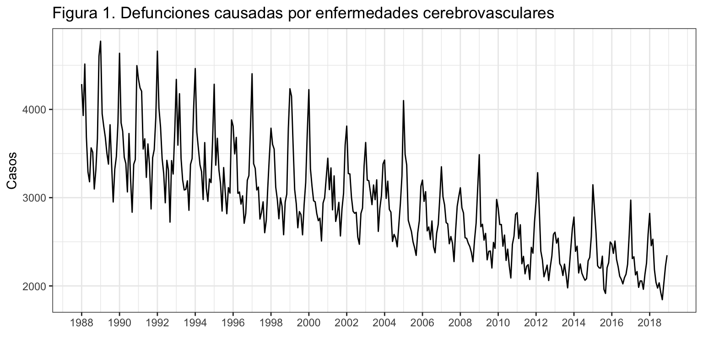
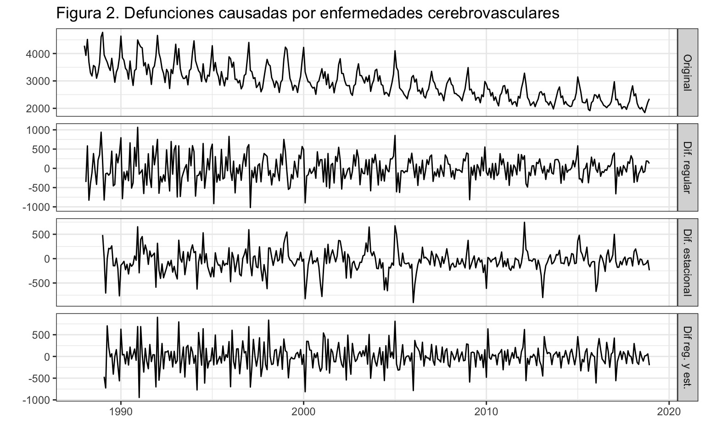
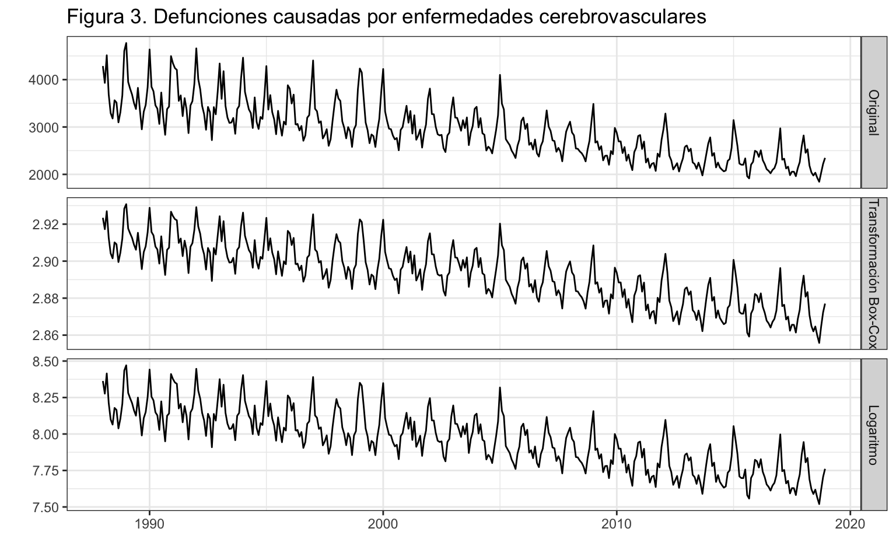
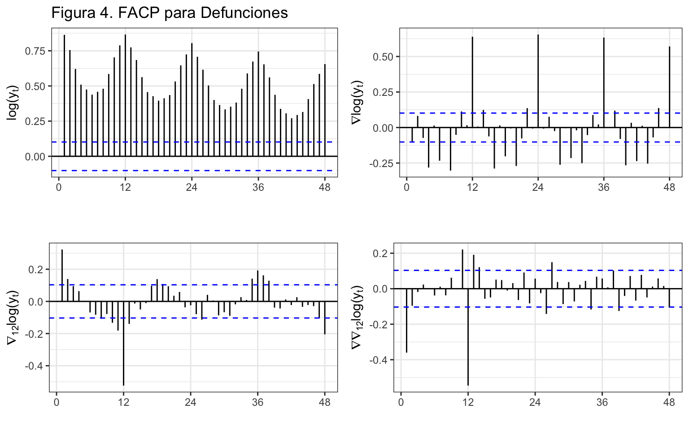
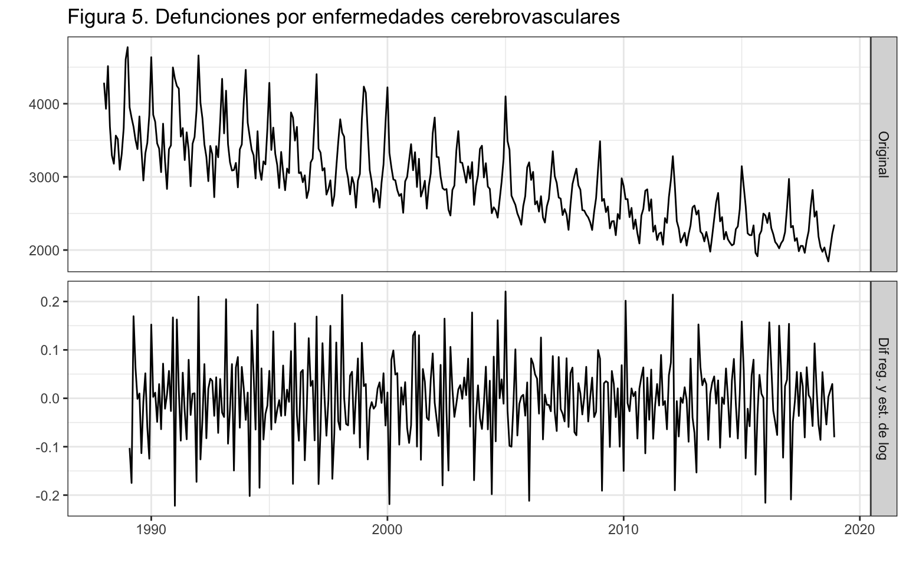
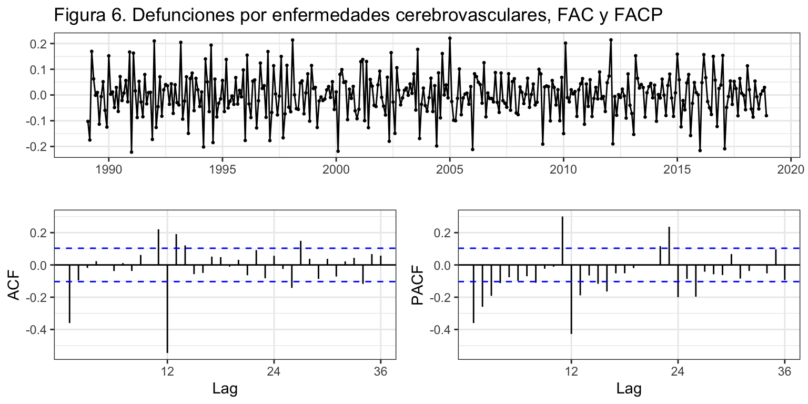
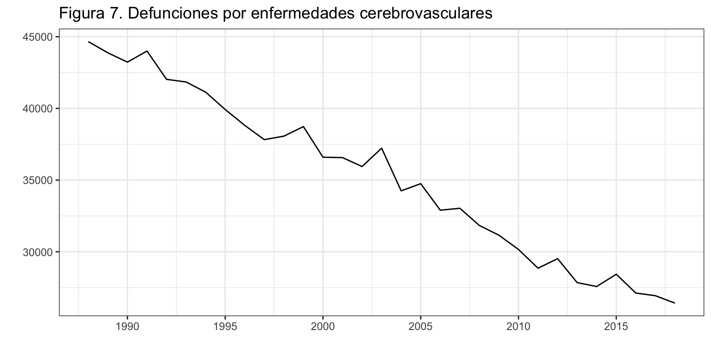

Consideremos de nuevo la serie temporal correspondiente al número de defunciones causadas por enfermedades cerebrovasculares. Esta serie está disponible en el Instituto Nacional de Estadística desde enero de 1980 hasta diciembre de 2018, un total de 39 años o 468 meses
En la descriptiva del tema 1 vimos que la descomposición revelaba la presencia de varios valores atípicos concentrados al inicio de la serie. Por este motivo, vamos a recortar la serie y considerarla solo desde enero de 1988, 31 años o 372 meses, tal y como ya hicimos para su análisis en el tema 2.
La serie presenta tendencia decreciente y estacionalidad de orden 12 en un claro esquema multiplicativo (véase figura 1).
DefEnfCer <- read.csv2("./series/Enfermedades cerebrovasculares.csv", header = TRUE)
DefEnfCer <- ts(DefEnfCer[,2], start = 1980, frequency = 12)
DefEnfCer <- window(DefEnfCer, start = 1988)
autoplot(DefEnfCer,
xlab = "",
ylab = "Casos",
main = "Figura 1. Defunciones causadas por enfermedades cerebrovasculares") +
scale_x_continuous(breaks= seq(1980, 2018, 2)) 
El esquema multiplicativo aconseja el uso del logaritmo para el análisis de la serie. En todo caso analicemos la serie en detalle para transformarla en una serie estacionaria (en media y varianza) y ergódica.
Como punto de partida veamos la gráfica de la serie original y de sus transformaciones más básicas: primera diferencia regular, primera diferencia estacional y ambas diferencias. Inicialmente no vamos a realizar una transformación de Box-Cox.
series <- cbind("Original" = DefEnfCer,
"Dif. regular" = diff(DefEnfCer),
"Dif. estacional" = diff(DefEnfCer, lag = 12),
"Dif reg. y est." = diff(diff(DefEnfCer, lag = 12)))
autoplot(series,
facets = TRUE,
xlab = "",
ylab = "",
main = "Figura 2. Defunciones causadas por enfermedades cerebrovasculares")
La figura 2 indica que tanto la diferencia regular (panel segundo) como la diferencia regular y estacional (panel cuarto) generan una serie estacionaria en media, aunque no en varianza: la varianza de las observaciones en los primeros años de la serie es mayor que actualmente. Otro indicador de la conveniencia de la transformación logarítmica.
Veamos que transformación nos sugiere R:
[1] -0.3181589series <- cbind("Original" = DefEnfCer,
"Transformación Box-Cox" = wDefEnfCer,
"Logaritmo" = log(DefEnfCer))
autoplot(series, facets = TRUE,
xlab = "",
ylab = "",
main = "Figura 3. Defunciones causadas por enfermedades cerebrovasculares")
El segundo panel de la figura 3 (transformación de Box-Cox óptima) muestra una varianza más constante que la del panel superior (serie original). Sin embargo, el valor sugerido por R de \(\lambda=-0.318\) es difícil de interpretar. Afortunadamente el panel inferior muestra que la transformación logarítmica genera una serie muy similar a la transformación de Box-cox óptima, así que definitivamente se usará el logaritmo de las defunciones causadas por enfermedades cerebrovasculares en lugar de la serie original.
Una vez decidida la transformación logarítmica, usaremos la FAC para determinar las diferenciaciones necesarias para alcanzar una serie estacionaria en media y ergódica.
ggAcf(log(DefEnfCer), lag = 48)
ggAcf(diff(log(DefEnfCer)), lag = 48)
ggAcf(diff(log(DefEnfCer), lag = 12),lag = 48)
ggAcf(diff(diff(log(DefEnfCer), lag=12)), lag = 48)
Los dos paneles superiores de la figura 4 muestran que ni el logaritmo de la serie, ni su tasa de variación mensual \((\nabla \log(y_t))\) son ergódicas. Obsérvese que en ambos casos ni al cabo de 48 retardos los coeficientes de autocorrelación son nulos.
Claramente, la doble diferencia del logaritmo de la serie es estacionaria y ergódica porque el panel inferior derecho muestra que sólo unos pocos coeficientes de autocorrelación son no nulos.
La tasa de variación anual \((\nabla_{12} \log(y_t))\) no ofrece resultados tan claros. El panel inferior izquierdo muestra una rápida caída de los valores de la autocorrelación en la parte regular (primeros valores de retardo), pero siguen observándose valores no nulos para valores de retardo altos.
Concluimos que para alcanzar la estacionariedad y verificar la hipótesis de ergodicidad es necesario diferenciar tanto en su parte regular como estacional el logaritmo de la serie. Es decir, la serie que verifica todas las hipótesis es \(\nabla \nabla_{12} log({y_t}_t)\).
Para finalizar, mostramos gráficamente la serie original y la serie transformada (figura 5), así como la FAC y FACP de la serie transformada (figura 6).
series <- cbind("Original" = DefEnfCer,
"Dif reg. y est. de log" = diff(diff(log(DefEnfCer), lag = 12)))
autoplot(series, facets = TRUE,
xlab = "",
ylab = "",
main = "Figura 5. Defunciones por enfermedades cerebrovasculares")
ggtsdisplay(diff(diff(log(DefEnfCer)), lag = 12),
main = "Figura 6. Defunciones por enfermedades cerebrovasculares, FAC y FACP")
Como la serie original tiene estacionalidad, vamos a realizar la prueba KPSS a partir de la serie anualizada (ya mostrada en el Tema 1).
DefEnfCerAnual <- aggregate(DefEnfCer, FUN = sum)
autoplot(DefEnfCerAnual,
xlab = "",
ylab = "",
main = "Figura 7. Defunciones por enfermedades cerebrovasculares") 
Procedemos con la prueba de KPSS con y sin tendencia determinista:
#######################
# KPSS Unit Root Test #
#######################
Test is of type: tau with 5 lags.
Value of test-statistic is: 0.0162
Critical value for a significance level of:
10pct 5pct 2.5pct 1pct
critical values 0.119 0.146 0.176 0.216
#######################
# KPSS Unit Root Test #
#######################
Test is of type: mu with 5 lags.
Value of test-statistic is: 5.3556
Critical value for a significance level of:
10pct 5pct 2.5pct 1pct
critical values 0.347 0.463 0.574 0.739Para un nivel de confianza del 5%, si asumimos la presencia de tendencia determinista, entonces no hay tendencia estocástica (el estadístico de contraste 0.016 es menor que el valor crítico 0.146). Si asumimos que no hay tendencia determinista, entonces hay tendencia estocástica (el estadístico de contraste 5.35 es mayor que el valor crítico 0.463). En ambos casos concluimos que la serie no es estacionaria.
Si repetimos el contraste con la serie diferenciada, esta vez para un modelo sin tendencia determinista (type = mu) no se rechaza la hipótesis nula, la serie diferenciada no tiene raíces unitarias y puede considerarse estacionaria.
#######################
# KPSS Unit Root Test #
#######################
Test is of type: mu with 5 lags.
Value of test-statistic is: 0.0115
Critical value for a significance level of:
10pct 5pct 2.5pct 1pct
critical values 0.347 0.463 0.574 0.739Nota: Las funciones ndiffsy nsdiffs avalan la doble diferenciación regular y estacional, pero como con todo algoritmo de decisión automático sus conclusiones deben considerarse orientativas.